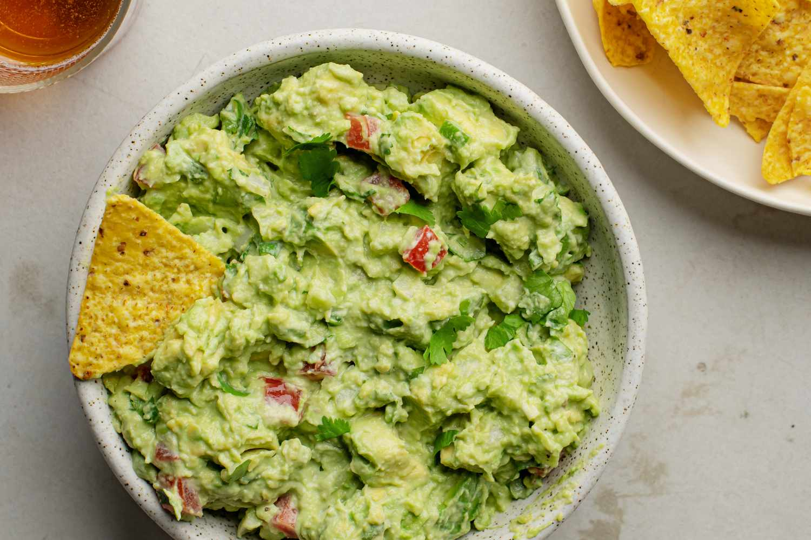

Guacamole

Add a twist to your nachos!
Guacamole is an avocado-based dip or spread that originated in Mexico.
It's typically made with mashed avocado and lime juice, then seasoned
with salt and cilantro. Guacamole often contains tomatoes and onions.
Ingredients
- Avocados
- Lime
- Salt
- Vegetables (onions and tomatoes)
- Fresh cilantro, minced garlic, cayenne pepper
Steps
Smash the avocado in a bowl
Add lime juice, salt and chopped vegetables